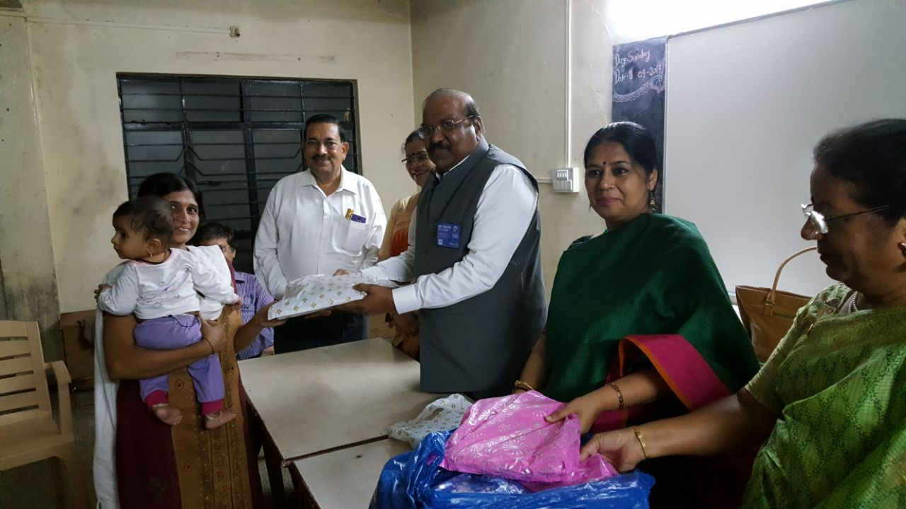

Rotary Club Nasik
GRAPECITY
Thursday, 12th October 2017
GRAPEVINE

President's Address
Dear Friends,
On 30th September we concluded our first trimester of Rotary year 2017-18. Through this period it has been heartening to see members coming forward and taking initiatives. We formed groups of club members, and this has helped us to share responsibilities and to enhance activities each month.
We are working on getting all our members registered on My Rotary. During these three months there has been good attendance from members at regular meetings and projects. We shall also be inducting three new members in October. Our club is strengthening, and it is growing!
- During the past three months we have:
- Focused and increased our humanitarian service: Each month we have carried out both medical and non-medical projects which would be ongoing projects and shall have long lasting results. Our Interact clubs, both at Savitribai Phulle Vidyalaya and Kilbil School, are active, and young interactors are willing to take up noteworthy causes.
- Enhanced Rotary’s public image and awareness by actively publicizing the work that we are doing. In the following months we shall engage in service projects, fundraisers and fellowship, where each member will be able to use her/his individual talents toward supporting and serving our community with pride and distinction.
I look forward to working with each of you within the wonderful framework of Rotary: Making A Difference.
Rtn Alka Singh
Ptrsident
Rotary Share Bazaar - 8th October 2017
Rotary Club Nasik Grapecity in cooperation with Chaitanya Ashram organised “Rotary Share Bazaar” on the 8th of October at Ashwin Nagar Swimming Pool grounds. The Bazaar was conceptualised a month earlier, in mid September, and was inspired by the Diwali spirit of giving gifts and sharing.
In order to create a large and varied collection of items for the Bazaar, Rotarians and RotaryAnns donated New and Old (but in good condition) items that they themselves would have been happy to receive. This Bazaar was unique because we welcomed everyone who came to choose the items that appealed to them, rather than arbitrarily handing out items. Thus this was truly a Bazaar - a collection of things to browse and choose from.
The Bazaar received 1230 visitors - needy beneficiaries who made their choice of sarees, shirts, trousers, jeans, dresses, dupattas, footwear, shoes, kitchen utensils, children’s clothes, bedsheets , travel bags, blankets, babywear, toys etc. Each beneficiary was given a shopping bag by the devotees of Chaitanya ashram, and they were then invited to walk around the bazaar and pick up things of their choice.
This Project was spearheaded by RtnAnn Alka Khairnar, RtnAnn Abha Pimprekar, RtnAnn Archana Kaushik, and RtnAnn Manorama Agarwal. All Rtns and RtnAnns came forward with donations. Teams of Rtns and RtnAnns worked dedicatedly in collecting, sorting out, and the stacking items together. We ensured that only items that were clean and in a good condition were accepted as donations.
The team of this event comprised of Rtn Asha Venugopal, Rtn Durga Sali, Rtn Madhuwanti Shidhaye, Rtn Radha Pillai, Rtn Minakshi Mittal, Rtn Kavita Dagaonkar, RtnAnn Alka Khairnar, RtnAnn Abha Pimprekar, RtnAnn Sheela Panchal, RtnAnn Lata Rajan, RtnAnn Medha Saikhedkar, and Rtn Jayant Khainer. Thank you and well done!
Kudos to the President Rtn Alka Singh, Director Projects Run Meenakshi Mittal, and Director PR Rtn Jayant Khairnar for their motivation & enthusiasm, which kept the team going. The success of the project was possible in no small measure due to the devotees of Chaitanya Ashram & the blessings of Swami Sampoornanad. Their management of the beneficiaries helped the bazaar proceed in a well-ordered manner, and 1230 people had an enjoyable experience as they chose gifts for Diwali.
Rtns and RtnAnns stood tirelessly, helping men, women, and children in making choices. Special acknowledgement of the efforts made by Rtn
Achhamma Aloor, Rtn Vebha Ghavare, Rtn Asif Sheikh, Rtn Arvind Panchal, Rtn Babulal Agrawal, and RtnAnn Udai Singh. They were all present along with the team of Rotary Share Bazaar early in the morning on 8th October.
The members of Rotary Club Nasik Grapecity extend a heartfelt thanks to everyone who worked to make this Rotary Share Bazaar a success. We are thankful that we were able to bring smiles and cheer to our visitors at the Bazaar, and to ourselves in the process of organising and conducting the Bazaar. Rotary Club Nasik Grapecity, making a difference!
Medical Camp at Savitribai Phule Vidyalay and Dixi village ZP school Ozar
On 26th September 2017 between 11.00 am and 4.00 pm a health check up camp was organized by Rotarians Asif Sheikh, Naresh Shah, Uday Patankar and Anil Deshmukh at ZP School situated in Dixi village, near Ozar town along Sukene Road, Nasik with help of Dr. Irfan Khan and his staff members from Samata Blood Bank, Mumbai Naka. In totally 254 students underwent medical checkup. Their weight, height, general physical health, blood group was checked. For girls haemoglobin was also checked. We are waiting for a detailed report. On receipt it will be delivered to the school authority by the Present of the club. Arrangements for further treatment of weak students will also be made.
On third October 2017, Rtrn Anil Deshmukh along with Rtrn Alka Singh President RCN Nasik and Rtrns Nareshbhai, Uday Patankar, PP Asif Shaikh, would-be member Mrs. Kiranchandra went to the ZP School Dixi and handed over the examination cards of 254 students of Pre-secondary and Secondary school students to Principal Shri Pawar, Vice Principal Shri Khare, teacher Smt. Rupali Bodake and others at 12.30pm.
The staff expressed their gratitude for the work done by Rotarians of RCN Grapecity. Also they presented many other requirements for the students. President Alka Singh asked them to list these, giving priority to needy students, which will be taken care of as per availability of funds and other resources.
In both schools a total of 1300 children underwent Medical checkup.
Swachh Bharat Abhiyaan
12 th August at Gangapur Gaon
On 12 th of August a cleanliness drive as part of Swachh Bharat Abhiyaan was organised by our RCN Grapecity, RC Ambad, Lokmat Times, and NMC. Four zones were the focus of this campaign and Grapecity was allotted Gangapur Village Market. Rotarians cleaned the market along with students, NMC workers, and health officials. The students were given two buckets, each of a different colour to differentiate between dry and wet waste. They were tasked with spreading awareness and
educating people at home.
Nation Building Awards
2nd September at Emerald Park
On the 20 th of September, part of teachers’ week, RCN Grapecity organized the Nation Builder Award for the second year in succession. 113 teachers were chosen and given awards for excellence in teaching. Mr Ravindra Pardeshi, special rural development ministry was the chief guest. The function was well-attended, many Rotarians and the families of the teachers were present. RCN Grapecity was awarded the “Star Supreme Club” award for the same project conducted last year.
Community service
The biggest gift one can give is one's time. This home has 55 members. Every Tuesday
Non Medical Dir. Rtn Minakshi Mittal, Rtn Kiran Chandra spend an hour interacting with the men and women staying at Dilasa Home.
Rtn Minakshi teaches them bhajans and songs. They love to sing and interact with our Rtn.. Rtn Kiran Chandra and Rtn Minakshi Mittal talk with them listen to them and tell them stories and fun tales.
People staying at Dilasa Home look for to these weekly visits
Rtn Asha Venugopal distributed sweets and savaries for all the members. Ujwala madam who with her husband looks after the home. She appreciated the committment and regular visits by Rtns of RC Nasik Grapecity
Project Medical - Water Filter
Dear friends, On 31st October 2017 a medical project of water sanitation, water purification was done at Z P School in Otur Tal. Kalvan, Dist Nashik water purifier donated by Rotary club Nasik Grapecity on 31/10/2017. Under global grant project. Official present were Medical Director Rtn Anil Deshmukh, charter president Rtn Naresh Shah. Rtn Uday Patankar, Jitendra Borse Sir and other school teachers along with school comitee President Shri Mangesh Desai, past president Shaban Pathan and other members.
Induction of two new members
Two new members were inducted into our club;
Architect Suruchi Ranadive – Ar. Suruchi Ranadive runs Ranadive Architects with her husband Ar. Ashish Ranadive.
Their son, Sahil, is pursuing mechanical engineering at BITS Pilani. Suruchi is also teaching faculty at NDMVP College of Architecture.
Mrs. Kiran Chandra – Mrs. Kiran Chandra is a retired professor from BYK College Nasik.
Her late husband Mr. Satish Chandra held a senior post at HAL and Mr. and Mrs. Chandra spent many years in Russia as part of the Indian embassy there.
Her elder daughter, Kapila Aseem Pawar did her Doctorate in Russian and is presently teaching at a school in Dubai. Her younger daughter, Natasha Banerjee is Associate Director Sales at Oberoi Hotel, Mumbai.
Weekly Meeting Record from July to September 2017
13/07/2017
Assembly
20/07/2017
Speaker: Dr Archana Khairnar
Subject: Rubella Vaccine

27/07/2017
Speaker: Dr Mrs. Medha Saykhedkar
Subject: Expanding the idea of India
03/08/2017
Speaker: Ms. Vasundhara Talwade
Subject: Taming Mt. kilimanjaro-experiences in Africa
10/08/2017
Speaker: Bhavesh Brahmankar
Subject: Green Warriors
17/08/2017
Speaker: Mr Pravin Mankar
Subject: Bag packing tour to USA
24/08/2017
Speaker: PP Rtn. Asha Venugopal
Subject: Membership awaewness & Rotary Central

07/09/2017
Speaker: Dr Bhausaheb More
Subject: Organ Donation
14/09/2017
Speaker: Mr Hemchand Rajput
Subject: Terrace Garden
21/09/2017
Speaker: Lt Col. G.S. Shrinivasan
Subject: Marathon race Cycling Race across America
28/09/2017
Speaker: Rtn. Dr. Rochana Rai R C Nasik Road
Interact Club
Rotary Club Of Nasik Grapecity
Avenue :- New GenerationDirector:- Rtn Achama Aloor
Committee members :-
- 1)Rtn.Durga Sali
- 2)Rtn.Asif Shaik
- 3)Rtn.Uma Datta
- 4)Rtn.Vebha Ghavare
- 5)Rtn.Rajni Gatkal
Objectives of Interact Clubs; The Purpose of Interact Club is:
- 1)To provide opportunity for young people to work together in a world -fellowship dedicated to service to humanity and international understanding,
- 2)To recognize and develop constructive leadership and personal integrity,
- 3)To create awareness of the importance of home and family
- 4)To buid respect for the rights of others and uphold the dignity of labour,
- 5)To accept individual responsibility as the basis of personal success ,community improvement and group achievement
- 6)To develop life skills including self development,Time management and personal finances.
Rotary Club Of Nasik Grapecity has undertaken the responsibilty of achieving these objectives in the Interactors of Two Schools;-
- 1) Kilbil St.Joseph's School- From 2011
- 2)Savitribai Phule Vidyalay- From March 2017
- 1) Kilbil St.Joseph's School Interact Club:-
- 1)The Installation Ceremony of the BOD of the Kilbil Interact Club was held on 20th July in the presence of The School authorities & Rotarians
- 2)16th Aug 2017 A talk with slide show on "Green Warriors of the World" was held in the School.Speaker Mr.Bhavesh Brahmankar,Senior Journalist of Maharashtra Times,expained in detail how the contribution of the Green warriors helped to conserve the environment by motivating the peoplearound them. 625 students,12Teachers and the principal attended the project.Rtn.Durga Sali & Rtn.Jayant Khairnar graced the programme.
- 2)Savitribai Phule Vidyalay Interact Club -
- 1)A talk on career development by Rtn. Dilpal Rana was held on 23rd Aug. "17 in the School between 3.30pm to 4.30pm.Std Vlll th students took active part in the discussions.Rtns Asha Venugopal, Durga Sali,Uday Patankar,Radha Pillai,Asif Shaik &Ann.Nzima were present to encourage the Interactors.
- 2)On 22nd Sept "17 A talk with slide show on " Green Warriors of the World" was held in the school.Speaker Mr. Bhavesh Brahmankar,Senior Journalist of Maharashtra Times ,explained in detail how the contribution of the Green Warriors helped to conserve the environment by motivating the people around them 75 students,3 teachers & the Principal attended the lecture.Rty Pres.Alka Sing,Rtns Asha Venugopal,Durga Sali,Uma Datta,Vibha were present.Rtny pres. Alka Sing motivated the students to join movement by making compost manure in the school premises which they would start as soon as the school reopens after Diwali Holidays..

No of Interactors- 30 nos
Tr. in charge- Tr.Smita Manohar Tambat
Rty.Advisor- Rtn .Achama Aloor
Board of Directors
President- Sharvari Apte
V.President- Blessy Viju
Secretary- Pranav Patil
Treasurer- Sarvadnya Bhagwat
Director- Samyak Sanghvi
Director- Tanishka Sangale
Projects completed:-

No of Interactors- 30students
Tr.in charge- Tr.Nivrutinath Kammodkar
Rty.Advisor- Rtn.Asif Shaik
Board of Directors
President- Choudhary Dananjay
V.President- Petekar Rani
Secretary- Bhagwan Akram
Treasurer- Khandare Sakshi
Director- Inamdar Shehbhas
Director- Gonge Shivani
Director- Sonawane Dhanashree
Projects completed
Projects planned-
- 1)Talk on Cyber safety
- 2)Quiz
- 3)Foot Ball /Badminton match
- 4)Compost manure & Veg.patch
- 5)Field Visit
Installation kilbil school on 20th July-2017
Installation ceremony of kilbil Interact club for the year 2017-18 took place on 20 th July at their school. The presence of Rtn. Asha Venugopal,Jyotika Pai, Durga Sali, Madhu Shidaye, Kavita Dagavkar, Rajani Gatkal & Dilpal Rana inspied the future Interactors. Principal Sr. Flora & Rtn. Asha gave motivational speeches. Sr Sukreen & Fr. Smith were also present to lend their support.
Vermicompost Project 3rd August-2017
On 3 rd , August 2017 interact club of kilbil was given a wonderful project by grapecity Nasik. Mrs Bhatt had a wonderful interactive session with the kids as she explained how earthworms are regarded as farmer’s best friend & how to prepare vermicompost. She also invited all the children to her farm for vocational visit to see the benefits of this.
Green Warriors at kilbil interact club
Mr. Brahmankar gave a presentation on green warriors to the interact club of kilbil. The members were very motivated by the dedication & sincerity of these warriors in various fields of life. Many rotarians like Durga Sali, Uma Datta, Achamma Aloor, etc. participated along with kids.
Interact club Dsvitribai Phule School 22nd September-2017
The project “Green Warriors” Presentation with slide show by Mr. Bhavesh Brahmankar was a grand success. The Presence of D.S.E Rtn. Asha, President Alka Singh, IPP Asif, V.P. Durga Sali, Rtn. Uday & P Achamma Aloor inspired the interactors & other students to plunge into action as soon as the school reopens after Diwali.
ROTARY’S GUIDING PRINCIPLES
The Four Way Test
In 1932, Rotarian Herbert J. Taylor created The Four-Way Test.
The test, which has been translated into more than 100 languages, asks the following questions: Of the things we think, say or do
- Is it the TRUTH?
- Is it FAIR to all concerned?
- Will it build goodwill and better friendships?
- Will it be beneficial to all concerned?
Object of Rotary
The Object of Rotary is to encourage and foster the ideal of service as a basis of worthy enterprise and, in particular, to encourage and foster:
FIRST: The development of acquaintance as an opportunity for service;
SECOND: High ethical standards in business and professions; the recognition of the worthiness of all useful occupations; and the dignifying of each Rotarian’s occupation as an opportunity to serve society;
THIRD: The application of the ideal of service in each Rotarian’s personal, business, and community life;
FOURTH: The advancement of international understanding, goodwill, and peace through a world fellowship of business and professional persons united in the ideal of service.
Official Club Visit of District Governor Dr K S Rajan
Rotary Club Nasik Grapecity, RID 3030 hosted Dist. Gov. Dr K S Rajan on 12th October 2017. Dist Gov Dr K S Rajan had a breakfast meet with Club President Rtn Alka Singh at her residence. Other invitees were AG Rtn Rasik Buthara, Hon Jt Secretary Rtn Kavita Dagaonkar, Treasurer Rtn Harish Sonawane, and VP Rtn Durga Sali.
The Dist Gov was briefed about the club policy on meetings, how the club functions and its various projects. He was impressed by the documentation presented to him and expressed his appreciation.
Project 1: WinS at ZP School Dugaon
For the year 2017-18 Wash in School, i.e., WinS is a central focus for RC Nasik Grapecity. As part of this project two hand wash stations were installed by the club at Zilla Parishad School Dugaon, and were inaugurated by the Dist Gov. The club implemented a novel and practical way of using soap cakes which was noticed and appreciated by the Dist Gov. Each student at the school was gifted a game of snakes-and-ladders which was specifically designed to teach children about hygiene and sanitation in a play-way manner. The Dist Gov was impressed by the creativity and far-sighted implementation of this project.
Project 2: Medical - Eye Care
Rotary Club Nasik Grapecity is sponsoring 30 cataract eye operations for the underprivileged and Chaitanya Ashram is our partner in this service. During his visit Dist Gov visited Tulsi Eye Hospital where he gave gifts to patients who had recently undergone cataract operations.
Project 3: Rachana Trust
The Dist Gov also visited a rehabilitation home for women and distributed gifts bringing smiles and cheer. Rotary Club Nasik Grapecity works with Rachana Trust towards bringing comfort, appreciation, care, and trust in the lives of young children and women.
Club events
The Club assembly was held at Hotel Emerald Park with the Directors and District Officers of the club present. The Dist Gov Rtn Dr Rajan interacted with Directors and committee chairs of the club and discussed the club’s strengths and areas with scope for improvement. Each Director along with his/her committee presented his/her report. The reports were clear and reflected the sound planning of projects and events and able execution of duties by committee members.
Lunch with the Dist Gov was attended by Board Members and AG Rtn Rasik Bothara.
Family NightThe Dist Gov Rtn Dr Rajan and AG Rtn Rasik Bothara were invited to an evening with club members and families. Club President Rtn Alka Singh presented her report and briefed the Dist Gov and AG about club activities and projects planned for the year. Club members Rtn Naresh Shah, Rtn Minakshi Mittal , Rtn Jayant Khainar, and Rtn Asha Venugopal were felicitated by the Dist Gov for exemplary service and commitment.
Two Zilla Parishad school teachers, Daspute Sir and Aher Sir, were felicitated for their support in the Nation Builder Award project.
Members of the Makhmalabad Microcredit group were felicitated for their zeal and hardwork. Project Microcredit, started nine years ago, is the ongoing flagship project of Rotary Club Nasik Grapecity.
The Dist Gov also inducted two new members, Rtn Suruchi Randive and Rtn Kiran Chandra. Both of them had been a part of our club and It was a pleasure to have them back in our rotary family.
Preceding the Dist Gov’s speech, Asst Gov. Rtn Rasik Bothara introduced the Dist. Gov.
During his speech Dist. Gov. Rtn Dr Rajan praised the club for good documentation and administration, participation of all club members, and excellent projects with meaningful and far reaching results. His words of praise and appreciation have become a source of encouragement to Rotary Club Nasik Grapecity.
Rtn Asha Venugopal proposed the vote of thanks.
The meeting was followed by the fellowship dinner.
Trustee Chair's Message - October 2017
What do we mean when we talk about peace?
In 1921, the fourth object of Rotary was established: "The advancement of international understanding, goodwill, and peace through a world fellowship of business and professional persons united in the ideal of service."
In Rotary today, we see peace not as an abstract concept but as a living, dynamic expression of human development, integral to our humanitarian mission. Much of our work for peacebuilding depends on the ability of Rotary members to execute three important activities: forming transformative partnerships, raising funds to support our many hundreds of projects, and recruiting and supporting Rotary Peace Fellows in their work. This year The Rotary Foundation formed a strategic partnership with the Institute for Economics and Peace, one of the leading organizations in identifying and measuring the attitudes, institutions, and structures that create and sustain peaceful societies.
Through this partnership, Rotary will work with the institute to create an online learning portal for Rotarians and peace fellows to build on their current expertise, apply new methods, and mobilize communities to address the issues underlying conflicts. Our goal is to foster community-based projects in peace and conflict resolution that are practical and impactful.
Rotary has also launched a Rotary Peace Centers Major Gifts Initiative to raise funds for new partnerships while continuing to garner contributions to educate and support our peace fellows and more.
President Ian H.S. Riseley's six peacebuilding conferences – taking place globally from February to June – will explore the relationship among peace, Rotary's areas of focus, and environmental sustainability. Our history proves that you don't need to be a diplomat to make peace.
When you mentor a student struggling to graduate, you are a peacebuilder.
When you launch any project to support economic development in your community, you are building conditions for sustainable peace and conflict management.
When you support and collaborate with a Rotary Peace Fellow, you are advancing peace.
Today's complex conflicts require more creative community-based initiatives. Together we can really make a difference.
ROTARY Acronyms/Abbreviations
3-H – Health, Hunger, and Humanity Program
AG – Assistant Governor
ANZO- Rotary region (Australia, New Zealand, & Others)
CD- Communications Division
CDA- Club and District Administration
CEEMA – Rotary region (Continental Europe, Eastern Mediterranean, & Africa)
CFO- Chief Financial Officer
CLP – Club Leadership Plan
COL – Council on Legislation
DAF- District Advised Fund
DDF- District Designated Fund
DG – District Governor
DGE- District Governor-elect
DGN- District Governor-nominee
DGND – District Governor-nominee designate
DLP – District Leadership Plan
EEMA- Combined Rotary regions (CEEMA and GBI)
EREY - Every Rotarian Every Year
FD- Finance Services Division
GBI – Rotary region (Great Britain and Ireland)
GETS – Governors-elect Training Seminar
GRSP- Georgia Rotary Student Program
GS- General Secretary and Chief Administrative Officer of RI and TRF
GSE- Group Study Exchange Program
HP- Humanitarian Grants Program Division
HR- Human Resources
IA – International Assembly
IAP Book – International Assembly Participants Book
IM- International Meetings
IO – International Office
IOD – Inter-office Designation
IPDG – Immediate Past District Governor
IS- Information Services Division
IPAC- International Projects Advisory Committee
LEADS – Leadership Education and Development Seminar
MD- Membership Development and Support Division
MOP- Manual of Procedure
OD- Official Directory
PD- Public Relations Division
PDG- Past District Governor
PE – President Elect
PETS- Presidents-elect Training Seminar
PHF- Paul Harris Fellow
PN – President Nominee
PO- President's Office/ Presidential Services Division
POEA- Executive Assistant to the President
PP – PolioPlus & Past President
RC – Rotary Club
RCC/RVC- Rotary Community Corp/ Rotary Village Corp
RI- Rotary International
RIBI- Administrative Region for GBI (Rotary International in Great Britain and Ireland)
RITS- Rotary International Travel Services
RRVF- Rotary Recreational and Vocational Fellowship
Rtn - Rotarian
RYLA- Rotary Youth Leadership Award
SACAMA- Rotary region (South America, Central America, Mexico & the Antilles)
SAR- Semi Annual Report
TRF- The Rotary Foundation
USCB- Rotary region (United States, Canada, and Bermuda)
WCS- World Community Service
YIR – Yours in Rotary